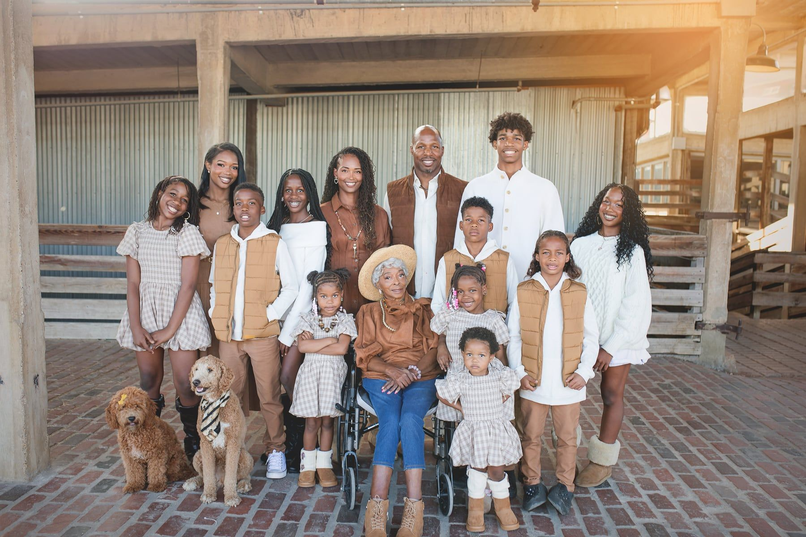

She Remembered
Who She Was.
Have you ever been surrounded by people and still felt unseen? I have. For years I was the one holding everything together — showing up for everyone, performing on the outside while I was empty on the inside. Somewhere in all that giving, I lost track of me. Not dramatically. Quietly.
Then God met me in a season of surrender, and I remembered who I was — who He created me to be. He's given me a beautiful platform: I'm a wife, a mother of eleven, and the founder of You Inspire Now. But my story starts with the woman who forgot who she was — and the God who reminded her.
"We are reminding women of who they know themselves to be — in the core, in the depths of their heart."
Go Inspire Now is how we give back. It's our Love Walks, the Inspiring Walk 25K, the Love Boxes, and our Freedom Retreats — the places where women find each other. We're building a community of women who support one another in their journey of becoming.
Because every woman we encounter should feel loved, seen, and valued.